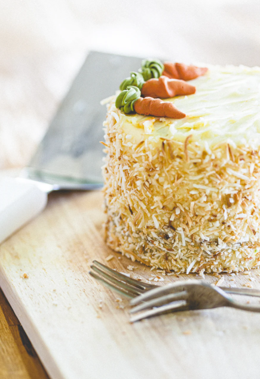
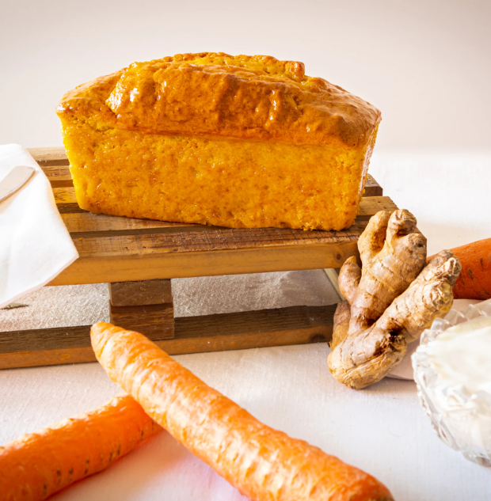

Our world has been turned upsidedown in the last weeks. We passed from stressing out about going to a place to stress about not been able to. But, trying to see the bright side, this situation has given us the time we have wished for years. Once you get over the anxiety of staying inside and get used to our new normal, we start enjoying the free time and being more productive within it. In my case, I have been cooking nonstop, something that I used to hate. My friends and family used to say that the day they see me in the kitchen will be the apocalypse, maybe they weren't so far about it.
So talking about this, I manage to make a carrot cake last week, and it was more than delicious. So I decided to share it with you all, for you to have the same enjoyment that I had and spend some of that free time on a delicious activity.
BACK
Quarantine carrot cake
THE INGREDIENTS:
4 Grated carrots
2 tsp. Cinnamon
1/4 tsp. Nutmeg powder
1/2 tsp. Ginger powder
4 tbs. Chia
1 tsp. Vanilla
2 tsp. Baking powder
1 tsp. Baking Soda
50ml. Oil
50ml. Water
1/2 tsp. Salt
100g. Chopped walnuts
50g. Raisins
1 cup. Sugar
2 tsp. Cinnamon
1/4 tsp. Nutmeg powder
1/2 tsp. Ginger powder
4 tbs. Chia
1 tsp. Vanilla
2 tsp. Baking powder
1 tsp. Baking Soda
50ml. Oil
50ml. Water
1/2 tsp. Salt
100g. Chopped walnuts
50g. Raisins
1 cup. Sugar
The STEPS:
1) Starting with the cake. Pour on a small bowl, 4 tbs of chia with the 180 ml of water, and let it rest at aside.
2) Meanwhile, on another bowl, this time a large one, mix all the dry ingredients; this includes flour, baking powder, baking soda, salt, nutmeg powder, ginger powder, and cinnamon; on the quantities mentioned above.
3) On another bowl, also a large one, add the oil and the sugar. Once everything is well integrated, add the chia and stir until the mixture is homogeneous.
4) Add the vanilla and the 50 ml of water and mix.
5) Little by little, pour the flour to the mix. Make sure to stir well looking for everything to be well incorporated.
6) Next, add the grated carrots, chopped walnuts, and the raisins into the mix.
7) Preheat the oven at 180ºC, and butter/oil and flour your pan. For this, cover the interior of your pan with butter or oil and pour some flour on it until everything is covered; remember to take out this excess.
8) Pour the mixture into the pan.
9) Bake for 40-50 minutes or until deep golden brown and a toothpick inserted into the center comes out clean. When you press on the top, it shouldn’t feel too spongy, so don’t be afraid of over-baking!
10) Remove from the oven and let rest in the pans for 15 minutes. Then carefully run a knife along the edges and gently invert onto cooling racks to let cool completely.
11) Plate, and decorate with brown sugar or creamcheese frosting.
2) Meanwhile, on another bowl, this time a large one, mix all the dry ingredients; this includes flour, baking powder, baking soda, salt, nutmeg powder, ginger powder, and cinnamon; on the quantities mentioned above.
3) On another bowl, also a large one, add the oil and the sugar. Once everything is well integrated, add the chia and stir until the mixture is homogeneous.
4) Add the vanilla and the 50 ml of water and mix.
5) Little by little, pour the flour to the mix. Make sure to stir well looking for everything to be well incorporated.
6) Next, add the grated carrots, chopped walnuts, and the raisins into the mix.
7) Preheat the oven at 180ºC, and butter/oil and flour your pan. For this, cover the interior of your pan with butter or oil and pour some flour on it until everything is covered; remember to take out this excess.
8) Pour the mixture into the pan.
9) Bake for 40-50 minutes or until deep golden brown and a toothpick inserted into the center comes out clean. When you press on the top, it shouldn’t feel too spongy, so don’t be afraid of over-baking!
10) Remove from the oven and let rest in the pans for 15 minutes. Then carefully run a knife along the edges and gently invert onto cooling racks to let cool completely.
11) Plate, and decorate with brown sugar or creamcheese frosting.
NOTE:
Store leftovers at room temperature, covered, for 2-3 days, in the refrigerator for 3-4 days, or covered well in the freezer for several weeks. However, it's best when eaten fresh.
Store leftovers at room temperature, covered, for 2-3 days, in the refrigerator for 3-4 days, or covered well in the freezer for several weeks. However, it's best when eaten fresh.


Wednesday, May 6